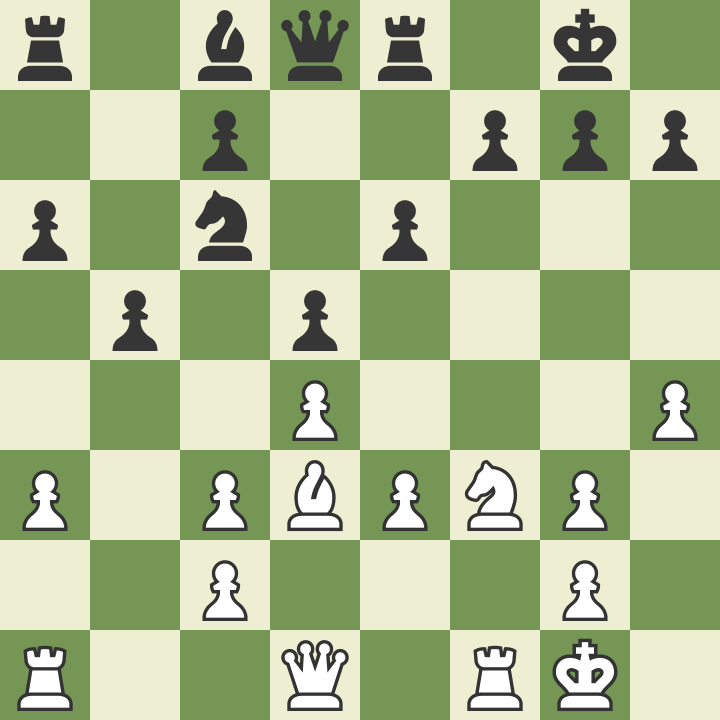
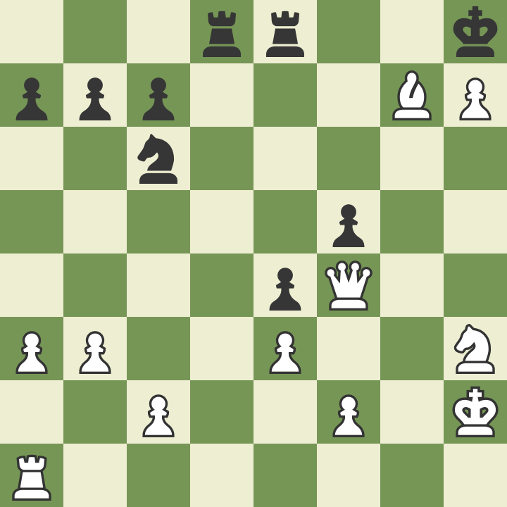

- Miniatura com sacrifício de bispo
- Partida difícil de equilibrar
- Sacrifício de bispo infundado
- Falta pimenta no Modern Love Amsterdã
- Bíblia Sagrada: Levítico
- Combinação
- Miniature with hidden tactic
- Movi a dama no pre-move e me ferrei
- Parei de tentar ser crítico (de cinema)
- Carandiru
- Fiz Trança de Banana
- Shogayaki
- Jaguatirica Coffee
- Começa um final de peões e cavalos
- Algorithms for Dummies
- Frango Karaage
- Viveiro
- Passei em uma entrevista técnica?
- As Leis de Lídia Poët
- Além da Imaginação (The Twilight Zone)
- Pyros Appellation Syrah 2019
- Colateral
- Catarina, a Menina Chamada Passarinha
- Susana Balbo
- Esposa em Tempo Integral
- 10 Exercícios de aquecimento completos
- O melhor teste técnico até agora
- Meu Irmão é Filho Único
- The Runaways - Garotas do Rock
- O Pastor e o Guerrilheiro
- Fúrias Femininas
- Pacifiction
# Miniatura com sacrifício de bispo [link]
Brancas sacrificam e ficam ganhas.

Brancas jogam e aplicam mate em 4 de duas formas: uma bonita e uma como seguiu na partida.

[Event "Live Chess"]
[Site "Chess.com"]
[Date "2023.02.27"]
[White "cavaloni"]
[Black "jucamarvado"]
1. Nf3 Nc6 2. d4 d5 3. Bf4 Nf6 4. Nc3 e6 5. a3 Bd6 6. Bg3 Bxg3 7. fxg3 O-O 8. e3
Ne4 9. Bd3 Nxc3 10. bxc3 a6 11. O-O b5 12. h4 Re8 {Depois de terminada a partida
vejo que a engine manda mesmo sacrificar.} 13. Bxh7+ Kxh7 14. Ng5+ Kg6 15. Nxf7
Qe7 {Mate em 4 de duas formas: uma bonita e uma como seguiu na partida.} 16.
Qg4+ (16. Qd3+ Kh5 17. Qh7+ Kg4 18. Qg6+ Qg5 19. Qxg5#) 16... Kh7 17. Qh5+ Kg8
18. Qh8# 1-0
# Partida difícil de equilibrar [link]
Negras jogam e colocam tudo a perder.

[Event "Live Chess"]
[Site "Chess.com"]
[Date "2023.03.01"]
[White "Michigan100"]
[Black "cavaloni"]
1. d4 g6 2. c4 Bg7 3. Nf3 Nf6 4. Nc3 d5 5. Bf4 Nc6 6. e3 Ne4 7. Be2 Nxc3 8. bxc3
dxc4 9. Bxc4 e6 10. O-O O-O 11. Re1 Bd7 12. e4 Ne7 13. Qd2 a6 14. Re3 Ba4 15.
Ng5 b5 16. Bb3 c5 17. e5 c4 18. Bxa4 bxa4 19. Rh3 h6 20. Ne4 Kh7 21. Nf6+ Bxf6
22. Rxh6+ Kg8 23. exf6 Nf5 24. Rh3 Qxf6 25. Bg5 Qg7 26. Bh6 Nxh6 27. Rxh6 f5 28.
Qg5 Rf6 29. Re1 Kf7 30. Re3 Rh8 31. Rxh8 Qxh8 32. d5 exd5 33. Re5 Qd8 34. Qh6
{Torre em d6, b6 e até rei em g8 são lances que mantém o equilíbrio. Porém,
tentar avançar o peão colocou tudo abaixo.} 34... d4 35. Qh7+ Kf8 36. Qh8+ Kf7
37. Qxd8 d3 {Brancas jogam e é mate em 1.} 38. Qd7+ (38. Re7#) 38... Kg8 39.
Re8+ Rf8 40. Qe6+ Kg7 41. Re7+ Kh8 42. Qe5+ Kg8 43. Qg7# 1-0
# Sacrifício de bispo infundado [link]
Negras jogam e é mate em 6 se capturar o bisco e mate em 3 se capturar o peão.

Brancas jogam e é mate em 3.

[Event "Live Chess"]
[Site "Chess.com"]
[Date "2023.03.01"]
[White "cavaloni"]
[Black "Rushan22"]
1. Nf3 d5 2. b3 Bg4 3. Bb2 Nc6 4. e3 Nf6 5. Be2 e6 6. O-O Bd6 7. d3 O-O 8. Nbd2
Nb4 9. Nd4 Bxe2 10. Nxe2 Bxh2+ {O sacrifício tem seu sentido: expor o rei e
ameaçar mate com a entrada do cavalo e da dama. No entanto, isso precisa ser
provado até o fim, pois o cavalo das brancas em f3 já defende a posição e não
fica muito claro onde está a compensação pelo bispo.} 11. Kxh2 Ng4+ 12. Kg1 Qh4
13. Nf3 Qh6 14. Nf4 f6 15. Nh3 e5 16. a3 {Expulsando o cavalo para defender o
peão que será desprotegido em c2 quando ativar a dama e iniciar as trocas, pois
estou com uma peça a mais.} 16... Nc6 17. Nh2 Nxh2 18. Kxh2 e4 19. dxe4 dxe4 20.
Qg4 Rfe8 21. Qf4 Qg6 22. Rg1 Rad8 23. g4 Qf7 24. g5 {Mesmo com menos material, a
melhor coisa a ser feita para as pretas é trocar as damas.} 24... f5 25. g6 Qe7
26. gxh7+ Kh8 27. Rxg7 Qxg7 28. Bxg7+ {Mate em 6 se capturar o bisco e mate em 3
se capturar o peão.} 28... Kxg7 29. Rg1+ (29. Qxf5 Rf8 30. Rg1+ Kh8 31. Qg6 Rg8
32. Qxg8+ Rxg8 33. hxg8=Q#) 29... Kh8 {Mate em 3 novamente.} 30. Ng5 (30. Qh6
Rg8 (30... Re7 31. Qf6+ Kxh7 32. Qh4#) (30... f4 31. Qg7#) 31. hxg8=Q#) 30...
Rd7 31. Qxf5 1-0
# Falta pimenta no Modern Love Amsterdã
No começo pensei que era alguma coisa relacionada com ser um país ou cidade com longa data de cultura progressista, o que tornaria todos os dramas de lugares mais complicados como Nova York e Japão meros detalhes do café da manhã. Com o passar dos episódios vejo que este volume da série que é baseada em um artigo de New York Times toma uma forma mais próxima de Easy, a série netflixiana onde problemas aparentemente complicados de relacionamento se resolvem em meia hora. Porém, nem isso a série na cidade holandesa mantém. Em dado momento, quando se passa a história de um casal que vive um relacionamento aberto de longa data, se torna claro que os personagens são muito reduzidos. Eles não possuem personalidade. Com o medo de impor valores em torno de pessoas fictícias que poderiam se tornar reais demais para as mentes sensíveis consumidoras da série, a trama se torna invisível. Não nos interessa pela didática se não há sangue e lágrimas. Do contrário, de que valem essas histórias de amor?
# Bíblia Sagrada: Levítico
2023-03-04 books philosophy ^
>
> "Se a pessoa não tiver recursos para oferecer uma ovelha, trará ao SENHOR duas rolinhas ou dois pombinhos como castigo pelo pecado.
> (...)
> "Se a pessoa não tiver condições de oferecer sequer duas rolinhas ou dois pombinhos, trará dois litros de farinha da melhor qualidade como oferta pelo pecado.
> (...)
> O sangue e a gordura são proibidos Então o SENHOR disse a Moisés: "Dê as seguintes instruções ao povo de Israel. Jamais comam gordura, seja de boi, carneiro ou cabrito.
> (...)
> Onde quer que morarem, jamais consumam o sangue de qualquer ave ou animal. Quem consumir sangue será eliminado do meio do povo".
>
Este terceiro capítulo da saga do povo odiado até pelo seu próprio Deus é cheio das regras. Regras obscuras, ultrapassadas, nefastas e, de certa forma, muito engraçadas. Em determinado momento se a pessoa não tem o que sacrificar, um quilo de alimento não-perecível parece ser o caminho. O ritual do holocausto é quase um show beneficente para um deus misericordioso e bem confuso. Muitas leis de Levítico seguem repetindo a mesma ladainha várias vezes a fio. É uma leitura monótona, ineficiente. É um registro histórico dos mais estéreis que já se ouviu falar na história da humanidade. E fica muito difícil sobreviver com as regras determinadas sobre quais animais consumir.
> "De todos os animais que vivem em terra, estes são os que vocês poderão consumir como alimento: qualquer animal que tenha os cascos divididos em duas partes e que rumine. Mas, se o animal não apresentar essas duas características, não pode ser consumido. O camelo rumina, mas não tem os cascos divididos, de modo que é impuro para vocês. O coelho silvestre rumina, mas não tem cascos divididos, por isso é impuro. A lebre rumina, mas não tem cascos divididos, de modo que é impura. O porco, embora tenha os cascos divididos, não rumina e, portanto, também é impuro. Não comerão a carne desses animais nem tocarão em seu cadáver. São cerimonialmente impuros para vocês.
Há um episódio particularmente específico sobre lepra e manchas na pele. O livro sagrado vira um tratado pré-medicina onde é decidido de sete em sete dias quem é que ficará isolado do resto da população. Eficaz como um folheto para passar os anos das trevas da ciência. Porém, texto sagrado? Não me faça rir mais, meu deus.
> "Quem sofrer de lepra rasgará as roupas e deixará o cabelo despenteado. Cobrirá a boca e gritará: 'Impuro! Impuro!'. Enquanto durar a lepra, ficará cerimonialmente impuro e viverá isolado, fora do acampamento."
Bônus: há penas severas para comportamentos sexuais ou comportamentos em geral na comunidade que infringem uma certa ordem social da época. Fica o mistério se essas regras sobrevivem ao tempo. Fica o alerta se existe uma mensagem mais poderosa nas risíveis regras judaicas.
> Não pratique a homossexualidade, tendo relações sexuais com outro homem como se fosse com uma mulher. Isso é detestável.
> Não cortem o cabelo dos lados da cabeça nem raspem a barba rente à pele.
> Se um homem adotar práticas homossexuais e tiver relações sexuais com outro homem como se fosse com uma mulher, os dois cometem um ato detestável e serão executados; decretaram a própria morte.
> Se a filha de um sacerdote se tornar prostituta e, desse modo, se contaminar, também contamina a santidade de seu pai e deverá morrer queimada.
> Nenhum descendente de Arão que tenha algum defeito se aproximará do altar para apresentar ofertas especiais para o SENHOR.
> Vocês têm seis dias na semana para fazer os trabalhos habituais, mas o sétimo dia é o sábado, o dia de descanso absoluto e de reunião sagrada. Não façam trabalho algum, pois é o sábado do SENHOR e deve ser guardado onde quer que morarem.
> Durante sete dias, morarão ao ar livre em pequenas cabanas. Todos os israelitas de nascimento morarão em cabanas. Desse modo, lembrarão cada nova geração de israelitas que eu fiz seus antepassados morarem em cabanas quando os libertei da terra do Egito.
> Quem blasfemar o nome do SENHOR será morto por apedrejamento por toda a comunidade de Israel. Qualquer israelita de nascimento ou estrangeiro entre vocês que blasfemar o Nome será morto.
> Durante seis anos, vocês semearão os campos, podarão os vinhedos e farão a colheita, mas no sétimo ano a terra terá um ano sabático de descanso absoluto.
> Consagrem esse ano, o quinquagésimo ano, como um tempo de proclamar a liberdade por toda a terra para todos os seus habitantes. Será um ano de jubileu para vocês, no qual cada um poderá voltar à terra que pertencia a seus antepassados e regressar a seu próprio clã. O quinquagésimo ano será um jubileu para vocês.
> O quinquagésimo ano será um jubileu para vocês. Nesse ano, não semearão os campos, nem ceifarão o que crescer espontaneamente, nem colherão as uvas dos vinhedos não podados. Será um ano de jubileu para vocês e deverão mantê-lo santo. Comam o que a terra produzir espontaneamente. No Ano do Jubileu, cada um poderá retornar à terra que pertencia a seus antepassados.
> A terra jamais será vendida em caráter definitivo, pois ela me pertence. Vocês são apenas estrangeiros e arrendatários que trabalham para mim.
> Vocês poderão comprar escravos e escravas de nações vizinhas. Também poderão comprar os filhos de residentes temporários que moram com vocês, incluindo os que nasceram em sua terra. Poderão considerá-los sua propriedade e deixá-los para seus filhos como herança permanente. Poderão tratá-los como escravos, mas jamais oprimirão alguém do seu povo.
> Mas, se vocês não me derem ouvidos e não obedecerem a todos esses mandamentos, e se quebrarem a minha aliança rejeitando meus decretos, desprezando meus estatutos e recusando-se a cumprir meus mandamentos, eu os castigarei.
> Contudo, qualquer coisa totalmente dedicada ao SENHOR, seja uma pessoa, um animal ou uma propriedade familiar, jamais será vendida ou comprada de volta. Tudo que é assim consagrado é santíssimo e pertence ao SENHOR. Nenhuma pessoa que tenha sido definitivamente marcada para destruição poderá ser comprada de volta; deverá ser executada.
# Combinação
Tentando agilizar um dos desafios de programação que tenho treinado encontro como fazer combinação em C++ ou C de maneira mais rápida que a fórmula oficial que requer calcular o fatorial e mais algumas contas. O nome desse problema é NCK, de N Chooses K, onde N é o número de elementos e K a amostragem obtida para a combinação. O resultado é instantâneo, pois se trata de um algoritmo O(n).
No entanto, apliquei a mudança no código sem entender exatamente o que estava acontecendo. Para isso decidi perguntar para o ChatGPT.
Wanderley Caloni
Olá. Me explica por que o código abaixo que implementa em C o algoritmo NCK funciona?
unsigned nChoosek( unsigned n, unsigned k )
{
if (k > n) return 0;
if (k * 2 > n) k = n-k;
if (k == 0) return 1;
int result = n;
for( int i = 2; i <= k; ++i ) {
result *= (n-i+1);
result /= i;
}
return result;
}
ChatGPT
Olá!
Este código implementa o algoritmo de combinação NCK, que calcula o número de maneiras diferentes de escolher k elementos a partir de um conjunto de n elementos. Ele funciona de forma eficiente usando a fórmula matemática de combinação:
nCk = n! / (k! * (n-k)!)
Onde n! representa o fatorial de n (o produto de todos os números inteiros positivos de 1 a n).
O código começa verificando se k é maior que n. Se for, retorna 0, já que não há maneira de escolher k elementos de um conjunto de tamanho menor que k. Em seguida, verifica se k é maior que a metade de n. Se for, redefine k para n-k. Isso é feito porque, por exemplo, 6C4 é igual a 6C2, então, ao calcular a combinação, é mais eficiente calcular a menor das duas.
Se k for igual a 0, o código retorna 1, pois há apenas uma maneira de escolher 0 elementos de um conjunto (não escolher nenhum).
O código então inicializa um resultado como n e executa um loop de 2 a k. Em cada iteração do loop, ele multiplica o resultado pelo próximo número de n-i+1 e divide pelo valor de i. Isso é feito para calcular o valor de nCk com a fórmula acima.
No final do loop, o código retorna o resultado.
Espero ter ajudado!
Wanderley Caloni
Vamos por partes. Poderia me explicar por que ocorre que 6C4 e 6C2 tenham o mesmo resultado?
ChatGPT
Claro, vamos lá!
A notação "nCk" é usada para representar o número de combinações de k elementos que podem ser escolhidos de um conjunto de n elementos. A ordem em que os elementos são escolhidos não importa.
A fórmula geral para nCk é:
nCk = n! / (k! * (n-k)!)
Agora, vamos ver por que 6C4 e 6C2 têm o mesmo resultado.
Para calcular 6C4, usamos a fórmula acima e substituímos n por 6 e k por 4:
6C4 = 6! / (4! * (6-4)!) = 6! / (4! * 2!) = (6 * 5 * 4 * 3 * 2 * 1) / ((4 * 3 * 2 * 1) * (2 * 1)) = 15
Para calcular 6C2, usamos a mesma fórmula e substituímos n por 6 e k por 2:
6C2 = 6! / (2! * (6-2)!) = 6! / (2! * 4!) = (6 * 5 * 4 * 3 * 2 * 1) / ((2 * 1) * (4 * 3 * 2 * 1)) = 15
Como podemos ver, o resultado é o mesmo para ambas as combinações, que é 15. Isso ocorre porque escolher 4 elementos de um conjunto de 6 é o mesmo que não escolher 2 elementos. Em outras palavras, se temos 6 elementos e escolhemos 4, então, os outros 2 elementos não escolhidos são automaticamente determinados. Portanto, as duas combinações são iguais.
Espero ter ajudado!
Wanderley Caloni
Certo. Nesse caso qualquer NCK é igual a outro desde que N1 seja igual a N2 e K1 seja o complemento de K2 referente a N?
ChatGPT
Sim, você está correto! Isso é conhecido como a propriedade de complementaridade de combinações.
A propriedade de complementaridade de combinações afirma que, se escolhermos k elementos de um conjunto de n elementos, então o número de maneiras de escolher os k elementos é o mesmo que o número de maneiras de escolher os n-k elementos restantes.
Isso pode ser visto usando a fórmula de combinação:
nCk = n! / (k! * (n-k)!)
Se escolhermos k elementos, então o número de maneiras de fazer isso é nCk. Mas se escolhermos os n-k elementos restantes, então o número de maneiras de fazer isso é (n choose n-k), ou seja:
nC(n-k) = n! / ((n-k)! * k!)
Observe que a única diferença entre as duas fórmulas é que k e (n-k) foram trocados. Isso significa que nCk e nC(n-k) são iguais!
Por exemplo, se quisermos encontrar 5C3, podemos aplicar a propriedade de complementaridade e dizer que 5C3 é o mesmo que 5C2, já que 2 é o complemento de 3 em relação a 5. Portanto:
5C3 = 5C2 = 10
Espero ter esclarecido!
Wanderley Caloni
Esclareceu de maneira impecável. O segundo ponto que gostaria de entender em sua explicação inicial é a parte do código que inicializa o resultado como n e executa um loop de 2 a k. Por que esses valores são utilizados para a obtenção do resultado?
ChatGPT
Bom, o loop de 2 a k no código é usado para calcular o resultado da combinação, aplicando a fórmula:
nCk = n! / (k! * (n-k)!)
No loop, a variável result é inicializada com o valor de n, que representa o número de elementos no conjunto original. Em seguida, o loop itera de i=2 até i=k, que é o número de elementos que queremos escolher.
Dentro do loop, o resultado é atualizado multiplicando o result pelo próximo elemento do conjunto n-i+1 e dividindo pelo i. A fórmula exata usada para atualizar o resultado é:
result *= (n-i+1); result /= i;
Essa atualização é feita para cada elemento escolhido, para garantir que todas as combinações possíveis sejam consideradas. No final do loop, result conterá o valor final da combinação de n elementos escolhidos k.
A inicialização de result com o valor de n é feita porque cada elemento escolhido para a combinação pode ser selecionado apenas uma vez. Então, no início, temos n opções para escolher o primeiro elemento. Depois de selecionar o primeiro elemento, restam n-1 opções para escolher o segundo elemento, n-2 opções para escolher o terceiro elemento, e assim por diante. Multiplicando esses valores, obtemos o fatorial de n até o n-k+1.
No entanto, como a ordem dos elementos escolhidos não importa em uma combinação, precisamos dividir pelo fatorial de k no final para eliminar as permutações redundantes, resultando na fórmula:
nCk = n! / (k! * (n-k)!)
Espero que isso esclareça como a inicialização de result com o valor de n e o loop de 2 a k são usados para calcular o resultado da combinação.
Wanderley Caloni
Ficou um pouco mais claro. No fundo este algoritmo é uma maneira inteligente de aproveitar os recursos computacionais para se chegar a um resultado sem precisar recalcular os inúmeros fatoriais como na fórmula original. Você teria alguma maneira de otimizar este algoritmo ainda mais?
ChatGPT
Sim, você está correto novamente! O algoritmo NCK apresentado é uma forma mais eficiente de calcular combinações sem a necessidade de calcular fatoriais.
Uma otimização adicional que pode ser feita é a redução do número de divisões realizadas no loop. Em vez de dividir o resultado por i a cada iteração, podemos acumular o produto dos i's e dividir pelo fatorial de k no final.
Dessa forma, o loop seria atualizado para:
int result = n;
int i;
for (i = 2; i <= k; ++i) {
result *= (n - i + 1);
product *= i;
}
return result / product;
Essa otimização reduz o número de divisões realizadas no loop de k para apenas uma, na linha final. Isso pode ajudar a melhorar a eficiência do algoritmo, especialmente para valores maiores de n e k.
Além disso, pode ser útil implementar uma verificação adicional para o caso em que k é muito pequeno em relação a n, já que nesse caso pode ser mais rápido usar a fórmula de combinação direta, em vez de executar o loop. Por exemplo, para valores de k abaixo de 5 ou 6, pode ser mais rápido simplesmente calcular a combinação diretamente usando a fórmula de combinação, em vez de executar o loop.
Espero que isso ajude!
Wanderley Caloni
Muito interessante sua sugestão de otimização. Acredito que isso tenha relação com a maneira com que o computador executa divisões, sendo mais rápido aplicar k-2 multiplicações e apenas uma divisão do que k-2 divisões, certo?
ChatGPT
Sim, exatamente! A divisão é geralmente mais cara do que a multiplicação para a maioria das CPUs modernas. Portanto, minimizar o número de divisões pode ajudar a melhorar o desempenho do algoritmo. No caso do algoritmo NCK, reduzir o número de divisões pode ser particularmente importante porque a divisão é executada a cada iteração do loop, o que pode ser caro para valores grandes de k.
A otimização que propus, que usa um produto acumulado em vez de divisões repetidas, ajuda a reduzir significativamente o número de divisões necessárias para calcular a combinação, tornando o algoritmo mais eficiente em termos de tempo de execução.
Wanderley Caloni
Certo. Por enquanto é só. Obrigado pelas suas esclarecedoras explicações.
ChatGPT
De nada! Fico feliz em ter ajudado. Se tiver mais alguma dúvida, é só perguntar.

# Movi a dama no pre-move e me ferrei [link]
Brancas jogam e vencem.

[Event "Live Chess"]
[Site "Chess.com"]
[Date "2023.03.03"]
[White "cavaloni"]
[Black "eugjen111"]
1. Nf3 e6 2. e4 d5 3. exd5 Qxd5 4. Nc3 Qd8 5. Bc4 Nf6 6. O-O Bd6 7. d3 h6 8. Be3
O-O 9. Qd2 Ng4 10. h3 Nxe3 11. fxe3 Nc6 12. a3 Ne5 13. Ba2 Nxf3+ 14. Rxf3 Qg5
15. Ne4 Qe5 16. Raf1 Qxb2 17. Bb3 Qxa3 18. Nxd6 Qxd6 19. Qf2 Qe7 20. e4 b6 21.
d4 c5 22. d5 Ba6 23. c4 exd5 24. exd5 Rae8 25. Rd1 Bb7 26. Rfd3 a5 27. Ba4 Rd8
28. Re1 Qg5 29. Qg3 Qxg3 30. Rxg3 Kh7 31. Re7 Ba6 32. Rc3 f5 33. Kf2 f4 34. Kf3
Bc8 35. Bc2+ Bf5 36. Bxf5+ Rxf5 37. Rb7 Rd6 38. Ke4 Kg6 39. Rxg7+ Kxg7 40. Kxf5
f3 41. gxf3 Rf6+ 42. Kg4 a4 43. Ra3 Rg6+ 44. Kf4 Rf6+ {A engine manda ser
corajoso e avançar o rei para e5.} 45. Kg3 (45. Ke5 Kf7 46. d6 Re6+ 47. Kd5 Re1
48. Kc6 Rd1 49. Kc7 Ke6 50. Re3+ Kf6 51. d7 Kf5 52. d8=Q Rxd8 53. Kxd8) 45... h5
46. Rxa4 Kg6 47. Ra3 Kg5 48. Rd3 h4+ 49. Kf2 Rf4 50. d6 Kf6 {Brancas jogam e
vencem.} 51. d7 Rd4 52. Rxd4 cxd4 53. d8=Q+ Ke5 54. Qxd4+ {Movi a dama no
pré-move e me ferrei.} 54... Kxd4 55. Ke2 Kxc4 56. Kd2 b5 57. f4 b4 58. f5 Kd5
59. f6 Ke6 60. Kc2 Kxf6 61. Kb3 Kf5 62. Kxb4 Kf4 63. Kc3 Kg3 64. Kd2 Kxh3 65.
Ke1 Kg3 {E com esse lance perde uma vitória certa.} 66. Kf1 h3 67. Kg1 Kf3 68.
Kh1 Kg4 69. Kh2 Kh4 70. Kh1 Kg3 71. Kg1 Kf3 72. Kh1 Kg4 73. Kh2 Kh4 74. Kg1 Kg3
75. Kh1 Kf3 76. Kh2 Kg4 77. Kg1 Kg3 78. Kh1 Kh4 79. Kh2 Kg4 80. Kg1 Kg3 1/2-1/2
# Parei de tentar ser crítico (de cinema)
2023-03-04 ^
Eu deveria parar nesse momento de escrever sobre filmes, exceto as cabines e eventos especiais. Por muitos anos eu escrevi que nem um retardado, comecei a ler uns livros doidos, a assistir umas análises nervosas. Fiz dois cursos com Pablo Villaça, uma referência local aos que levam a sério a arte. Tudo que fiz e continuei fazendo foi até o momento em que eu consegui "sentir" o que é ser crítico de cinema como uma profissão. O trabalho descomunal de estudar arte, filosofia, história. De assistir aos clássicos, de entender as correntes que nos antecederam. E, por fim, acompanhar cada novo ano as produções, os lançamentos, os novos talentos e os existentes. Os festivais de conteúdo duvidoso. As inúmeras sessões com filmes experimentais. As retrospectivas da Mostra. Os textos dos colegas. Eu enxerguei tudo isso faz alguns anos, mas por algum motivo continuei tentando evoluir mesmo sem tempo de me dedicar profissionalmente. Agora acabou. Vou largar o ritual de todo filme escrever e anexar à rotina de blogueiro falar sobre o que ando vendo. Não sou obrigado e nem vocês em consumir conteúdo aquém dos que vivem para isso. Voltou para mim, depois de quase 13 anos, a ser um hobby light como os textos eventuais sobre programação. Sobre café. Sobre vinhos. É isso que torna um blogue valioso. Ele registra o momento sem o compromisso de mais. O que foi, foi. E o que virá, só Deus sabe.
# Carandiru
O filme é baseado no livro do Drauzio Varella, aquele médico que na pandemia falava que todos íamos morrer. Quem interpreta o doutor no filme é um sujeito que só fica sorrindo e fazendo perguntas bestas aos pacientes no presídio. Tudo soa muito falso e teatral. O fato de vários personagens serem interpretados por um elenco conhecido das novelas ajuda ainda mais. Cada ator e atriz quer brilhar em seu momento de viver um ser humano contra o sistema e oprimido por ele. Oh, glória! Várias histórias supostamente tristes de bandidos são mostradas. O motivo é contextualizar o espectador sobre como eles chegaram a ser presos e para que todos saibam que ninguém presta mesmo naquela cadeia. Há também os trouxas que caíram lá, mas já estavam indo pelo caminho errado do lado de fora. De qualquer forma, o tom teatral diminui o peso dos dramas. O diretor Hector Babenco se consagra na parte onde ocorre a famosa chacina do Carandiru, em 92, mostrando sangue caindo pelas escadarias e o amontoado de corpos nus, de castigo no quintal, após a polícia militar impor ordem. Eu lembro dos meus professores comentando sobre esta calamidade na quinta-série. Houve uma "comoção pública". Hoje entendo a histeria do "direitos humanos" ao constatar pelo próprio filme que na realidade morreram apenas cem presos de sete mil. O objetivo: proteger os outros presos. Morreu foi pouco, ou o suficiente.
# Fiz Trança de Banana
Essa receita originalmente iria cará e foi adaptada para usar banana bem madura. Além da banana ou do cará, os outros ingredientes são: farinha de trigo, fermento biológico, ovos, leite, manteiga e açúcar. Pegue a banana e cozinhe em uma panela, reduzindo o líquido ao máximo. Quando a banana esfriar, pese-a e use o dobro do peso em farinha de trigo. Cada 1kg de farinha faz três tranças de tamanho médio e vai 6 ovos. Os outros ingredientes estão pesados em porcentagem da farinha: 20% de manteiga, 20% de leite e 25% de açúcar em média. Dependendo do quão doce está a banana e o quão doce você deseja que fique o pão você pode aumentar ou reduzir a quantidade de açúcar.
Para preparar a massa comece pelo fermento. Se usar o instantâneo, faça uma esponja com 2% do peso da farinha e a mesma quantidade de farinha e água (50g a 100g). Misture tudo e aguarde cerca de 1h em temperatura ambiente para vê-la ativada, cheia de bolhas. Se quiser incluir fermento natural alimente-o e aguarde ele dobrar de tamanho. Você pode usar um dos dois fermentos ou os dois. Se no meio houver o instantâneo o crescimento será mais rápido devido a ele, e o fermento natural será responsável pelo aroma e maciez. No caso de usar apenas o fermento natural, tenha paciência: os tempos de fermentação são maiores.
Quando os fermentos estiverem ativos é hora de juntá-los com a farinha e os ovos. Misture tudo e adicione 20% de leite, excluindo a água já usada para os fermentos. Sim, é um cálculo complexo de porcentagem e regra de três; boa sorte em ser padeiro. Depois de misturado aguarde 10 minutos descansando para realizar uma rápida autólise e relaxar a massa para a sova. Depois desse período a sova precisa ser bem feita, pois essa massa tem os mesmos desafios do panetone de colocar ingredientes que dificultam seu crescimento: o açúcar e a manteiga, que devem estar já pesados esperando para entrar na massa. A manteiga integra melhor cortada em cubinhos.
Aliás, você pode já adicionar a manteiga e o açúcar durante a sova ou aguardar até a massa começar a ficar elástica. Não notei muita diferença entre esse antes e depois, o trabalho é o mesmo. É comum a massa ficar grudenta, mas tenha paciência. Atente para que ela esteja em ponto de véu e macia. Depois de cerca de 15 minutos sovando e misturando os ingredientes já deve estar nesse ponto. Se não estiver deixe descansando mais 10 minutos e continue. Quando a massa estiver elástica e ponto de véu, é só colocar em um recipiente fechado formando uma bola e deixar crescer até dobrar. Você pode deixar em temperatura ambiente ou na geladeira, ou em ambos, conforme seu ritmo. Na geladeira o crescimento irá desacelerar, sendo possível até deixar a noite inteira. Em temperatura ambiente é questão de uma ou duas horas, exceto se for fermento natural, o que pode demorar até a noite inteira se for uma noite fria. O objetivo do crescimento é dobrar de tamanho.
Depois de crescida você precisa de uma superfície lisa, limpa e com um pouco de farinha para não grudar. Separe cada porção de cerca de 300g de massa em três pedaços e vá alongando-os em fios grossos, puxando, segurando duas pontas como se fosse uma corda de pular. Pode usar a gravidade para isso, só levantando a massa de um lado e do outro. Só cuidado para não alongar demais. Forme três fios longos um do lado do outro, junte as três pontas e comece a trançar a massa, levando o fio da ponta para o meio, depois o da outra ponta, e assim por diante. Mantenha bem aberto o espaço entre as linhas para não grudar, mas na hora de juntar coloque um em cima do outro e evite puxar demais, pois perde volume. Ao final, junte as três outras pontas. Leve para uma forma untada ou com papel manteiga (vai ser melhor para tirar depois) e aguarde crescer mais por uma hora. É capaz que a trança até dobre de tamanho novamente.
Quando estiver pronta para ir ao forno pré-aqueça em 180 graus. Para uma cobertura opcional pode-se misturar açúcar (de preferência cristal) com canela e gema, ou até o ovo inteiro; pincele essa mistura por cima da massa. A gosto. Deixe assando por pelo menos 20 minutos até cerca de meia-hora ou até a parte externa dourar. Aguarde esfriar para tirar da forma sem desmanchar.
2023-03-03
Fiz uma mega porção com 800g de banana reduzida que estava no freezer e 1,5kg de farinha. Todo o resto segui as proporções oficiais de 20% de manteiga (300g), 30% de açúcar (500g) e 6 ovos por kg de farinha, o que deu 9. Tudo foi feito com fermento natural, 450g já alimentado (150g de base, a mesma quantidade de farinha e água). Por causa da água do fermento fiquei na dúvida sobre o nível de hidratação. Cheguei a fazer os 20% de leite, mas ao hidratar a massa com metade já notei que estava líquida demais e descartei o resto. De fato, após fermentar a noite inteira em temperatura ambiente o resultado estava bem hidratado e tive que colocar bastante farinha na bancada. Fazendo a conta correta agora pela quantidade de farinha total, incluindo a do fermento natural (1500+(450/2)) daria 345.0 de leite. Porém, a água incluída no fermento já é responsável por 225.0, o que deixa a quantidade de leite que resta em 120g (considere ml==g). Ou seja, devo ter colocado 80g a mais do necessário. Porém, acabou dando tudo certo. Ao final do crescimento e montagem deu três tranças médias e uma gigante. Assado por menos de meia hora a parte externa levemente tostada. Usar o papel manteiga tornou muito mais simples retirar da forma após frio. O tamanho gigante foi o único que ficou encruado no meio e devo aposentar este tamanho, que não é prático e tende a queimar nas bordas antes de assar (necessita teste). Pelos cálculos 300g de farinha faz uma trança, ou seja, cada 1kg de farinha gera três porções. As tranças médias ficaram fofinhas e macias. Uma perfeição.
2022-05-09
Fiz novamente trança de banana, mas dessa vez simplifiquei o método e agilizei com fermento instantâneo. Fica algumas dicas e atualização do preparo.
2021-08-07
Terceira vez fazendo, e dessa vez acertei o ponto. É necessário mais que o dobro de banana reduzida para o gosto da fruta finalmente ser sentida no pão. Fiz no frio do inverno e a fermentação apenas com fermento natural durou umas 48 horas até finalmente estar pronto para o forno, mas valeu a pena o esforço em sovar e em descansar a massa. A textura ficou muito boa, próxima de um panettone. Cresceu bem e um tanto pegajosa. No final usei uma dica da Mitiko de usar banana como cobertura: piquei uma banana e fiz uma massa com gema, canela, açúcar cristal e um pouco de água. O único porém dessa fornada foi o uso de uma banana azeda (acho que nanica), mas usar uma banana mais doce deve corrigir.
2021-07-05
Além se trocar o cará por banana usei meu fermento natural (mas depois pedi ajuda e coloquei um pouquinho do instantâneo na esponja) e sovei a massa após misturar tudo. Com esse frio demorou 24 horas para finalmente crescer, mas funcionou. Longuíssima fermentação. O sabor não ficou quase nada de banana. Pretendo usar mais na próxima.
# Shogayaki
Este prato vai tradicionalmente carne de porco e significa gengibre frito ou grelhado. São tirinhas finas ou bifes de qualquer parte de carne de porco junto de shoyu e gengibre no fogo. Entre os ingredientes mais tradicionais vai cebola, saquê e mirim (saquê doce). O gengibre é ralado, fatiado ou ambos. A mesma coisa com a cebola. São sugestões. Entre as dicas valiosas do preparo, a regra de ouro é nunca cozinhar demais carne de porco ou ela fica muito seca, pois perde mais fácil o suco antes de selar. Um dos truques é polvilhar farinha por cima para reter esse suco da carne. O modo de preparo também é variado, mas basicamente envolve fritar os dois lados da carne rapidamente, jogar a cebola para dourar e absorver o sabor do queimado e jogar a carne novamente junto de um suco formato pelo gengibre e saquê. O fininho da carne fica em torno de 3 milímetros de espessura.
2023-03-05
Estava quase acertando o ponto da carne, mas a receita que fazemos em casa vai brócolis e sua água atrasou um pouco o processo. Acredito que seja possível deixar um caldo mais ralo junto de amido de milho para engrossar, o que evitaria ter que reduzir o líquido do brócolis.
# Jaguatirica Coffee
Este é o café especial da região de Monte Verde. Provei ele achando no mercado local, uma boa surpresa, e depois comprei a versão em grãos na própria torrefadora, em uma das ruas da cidade. Infelizmente não deu tempo de experimentar o espresso porque estávamos de saída. Este café contém um equilíbrio divino entre acidez e doçura. Não se sente amargor, este é daquele estilo em que o café parece um suco. Remete um pouco a frutas maduras ou de inverno, como nozes e castanhas, apesar de haver um pouco de cítrico. Provei mais de duas semanas depois de abrir o pacote do moído do mercado porque estou evitando ingerir cafeína todos os dias, mas o sabor continua bem agradável apesar do tempo envelhecendo. Guardando na lata de Tiradentes.
# Começa um final de peões e cavalos [link]
Brancas movem e... e nada. É um final complicado.

[Event "Let's Play!"]
[Site "Chess.com"]
[Date "2023.01.28"]
[White "cavaloni"]
[Black "fssantana"]
1. Nf3 d5 2. e4 dxe4 3. Ng5 f5 4. Bc4 Nh6 5. c3 Nc6 6. Ne6 Qd6 7. Nxf8 Rxf8 8.
Qh5+ Qg6 9. Qxg6+ hxg6 10. d4 exd3 11. Bxd3 Be6 12. Bb5 Bd7 13. Ba4 O-O-O 14.
O-O Ne5 15. Bc2 Bb5 16. Re1 Nd3 17. Bxd3 Bxd3 18. f3 Rfe8 19. Bg5 Rd7 20. Na3 e5
21. Rad1 Nf7 22. Bc1 f4 23. Bxf4 {E finalmente, após em desvantagem por tanto
tempo, o equilíbrio.} 23... Ree7 24. Re3 g5 25. Bxg5 {Mais um peão de graça.}
25... Nxg5 26. Rdxd3 Rxd3 27. Rxd3 Rd7 28. Re3 Rd1+ 29. Kf2 Rd2+ 30. Re2 Rxe2+
31. Kxe2 Kd7 32. Nc4 Nf7 33. Ke3 g5 34. Ke4 Ke6 35. b3 b5 36. Ne3 Nd6+ 37. Kd3
c5 38. Ke2 e4 39. fxe4 Nxe4 40. Nd1 Kf5 41. Kf3 b4 42. c4 Nc3 {Agora entregou de
vez.} 43. Nxc3 bxc3 44. Ke3 1-0
# Algorithms for Dummies
2023-03-14 books interview coding ^
De John Mueller e Luca Massaron, este livro mantém a fama da série "for Dummies", com livros de conteúdo bem estruturado, acessível para a maioria dos leitores e ainda útil para quem já está acostumado com um termo ou dois do assunto, ou até o assunto inteiro.
A linguagem usada para resolver a criação ou uso de algoritmos conhecidos é o Python, o que inibe a barreira de entrada até mesmo de quem nunca programou na vida. Não contentes com isso, o autores colocaram dois capítulos no início que ensinam o leitor o bê-a-bá do Python e das bibliotecas utilizadas. O código-fonte está todo disponível em um repositório do GitHub.
Existe uma introdução sobre complexidade de algoritmos que é corrida, mas igualmente útil, pois ajuda a não nos aprofundarmos tanto assim na matemática envolvida quando se fala em velocidade e economia de recursos ao executar um código na prática, mas ao mesmo tempo mantém na memória a questão de como desenhar o algoritmo terá impacto profundo em sua execução com uma massa de dados maior que a ideal.
Ainda estou lendo, mas já consegui uma frase intrigante logo no início, referente a como escrever soluções recursivas, intuitivas por natureza, difíceis de mantê-la sob controle.
> When working with recursion, you must remain proactive or endure the consequences later.
> Without organization, making any sort of decision becomes impossible. An algorithm might end up going in circles or giving inconvenient output.
> When faced with difficult problems, you quickly discover that no magic potion exists for making wishes come true or silver bullets to dispel bad things. Similarly, no algorithmic technique saves the day every time. That's the no-free-lunch principle often quoted in the book. The good news is, you can arm yourself with different general techniques and test them all on your problem, because you have a good chance that something will work well.
> A greedy algorithm reaches a problem solution using sequential steps where, at each step, it makes a decision based on the best solution at that time, without considering future consequences or implications.
> Two elements are essential for distinguishing a greedy algorithm: At each turn, you always make the best decision you can at that particular instant. You hope that making a series of best decisions results in the best final solution.
> Puzzle problems, in which the number of possible decisions can become huge, are more frequent than you expect. Some problems of this type have already been solved, but many others aren't, and we can't even transform them (yet) into versions we know how to solve. Until someone is smart enough to find a generic solution for these problems, a greedy approach may be the easiest way to approach them, provided that you accept that you won't always be getting the best solution but a roughly acceptable one instead (in many cases). These difficult problems vary in characteristics and problem domain. Different examples of difficult problems are protein unfolding (which can help cure cancer) or breaking strong password encryption, such as the popular RSA cryptosystem
> In the 1960s, researchers found a common pattern for all of them: They are all equally difficult to solve. This pattern is called the NP-completeness theory (NP stands for nondeterministic polynomial). In a sense, these problems distinguish themselves from others because it's not yet possible to find a solution in a reasonable time —that is, in polynomial time. Polynomial time means that an algorithm runs in powers of the number of inputs (known as P problems). Linear time is polynomial time because it runs O(n1). Also quadratic O(n2) and cubic O(n3) complexities are polynomial time, and though they grow quite fast, they don't compare to NP-complete complexity, which is usually exponential time, that is, O(cn).
> (...) when you can break down a problem into nested subproblems can dynamic programming beat brute-force approaches that repeatedly rework the same subproblems.
> You can trace dynamic programming to two large families of solutions: Bottom-up: Builds an array of partial results that aggregate into a complete solution Top-down: Splits the problem into subproblems, starting from the complete solution (this approach is typical of recursive algorithms) and using memoization (defined in the next section) to avoid repeating computations more than once
Menos é mais
Na cozinha não se pode usar regras fixas. Contrariando aquela moda de deixar mais tempo apurando alguma coisa para que esta coisa fique melhor não serve para tudo. Hoje testemunhei isso com o Frango Karaage que fiz e o caldo com a carcaça das coxas que desossei.
Segui a receita à risca e funcionou muito bem, e ela diz para marinar a carne por meia hora e que não é bom deixar muito tempo. E de fato o sabor ficou ótimo, não era necessário deixar em dia inteiro, por exemplo.
A mesma coisa com o caldo que fiz fervendo a água com os ossos da coxa do frango. Para desossar você corta com uma faca bem afiada no sentido do osso e bem rente a ele no verso da coxa. O que sobrou pode cozinhar por uma hora e meia com legumes de sua preferência. Eu só coloquei os ossos e o sabor ficou ótimo, usei no lámen.
Já o Karaage saiu levemente gorduroso, mesmo passando ele na farinha seguido de amido de milho. E eu desconfio que a temperatura do óleo pode ter sido a causa. É necessário fazer duas infusões no óleo quente. A primeira a 140 graus por um minuto e meio e a segunda a 160 graus por 45 segundos. Após a primeira fritura o óleo deu uma subida na temperatura que demorou para descer, mesmo com o fogo desligado. Fiquei curioso para pesquisar o comportamento. Se quero aprender melhor a fazer frituras isso eu preciso dominar.
# Viveiro
Filme cheio de metáforas sobre a vida de um casal de classe média. Ainda um jovem casal, eles são obrigados a viver o resto do seu sonho americano em 2x (ou mais), enclausurados em um condomínio de casas, tendo que cuidar de um filho que não pediram. Você já pescou algumas das metáforas. O filme foi feito para o espectador sair da sessão se achando muito esperto por entender algumas delas. Porém, o próprio filme não deve entender metade, pois joga símbolos na nossa cara como a evitar que olhemos para dentro e enxerguemos o vazio que é este filme.
# Passei em uma entrevista técnica?
2023-03-19 ^
Quis que o título deste poste fosse o contrário do anterior onde falo que não consegui resolver um problema simples de programação em meia hora com minha entrevistadora de olho. Porém, eu não sei se eu passei no teste. O que eu sei é que dos dois testes de programação que fiz, online pelo HackerRank, mas sem monitoração, ambos os códigos resolviam o problema, embora o último deles tivesse uma complexidade acima do desejável.
Este foi um teste de uma hora e meia com 20 e tantas perguntas de C++ moderno, a maioria sobre obtenção de tipos por expressão e algumas maluquices com código criativo, e dois problemas de fazer código. Tudo feito pelo site. Você começava a fazer e um contador de 90 minutos dizia quando você deveria parar.
Infelizmente não copiei os exercícios e seus links não servem mais. Agora resta o código. Então o jeito é continuar praticando.
# As Leis de Lídia Poët
A advogada que investiga crimes
Pautada em uma época onde mulheres possuíam um papel bem definido na sociedade, pelo menos por enquanto, esta série italiana explora uma protagonista sem medo ou noção, que se submete a vários riscos da época, como sair à noite sozinha. O mais curioso é que a série não dramatiza este risco. Do ponto de vista de sua criação esta é uma história contemporânea, com o único detalhe sendo a época histórica para impedir a advogada formada de seguir com a profissão. Igualmente curioso, pois a série se revelou desde o início como investigativa. Proibida ou não, esta moça será mais Sherlock que Saul Goodman. Embalada em rock alternativo com batidas bem definidas para te mostrar o impacto entre a música moderna e a época antiga. Sentiu?
# Além da Imaginação (The Twilight Zone)
Pensava eu que esta reimaginação da série icônica da TV merecia uma assistida, mas após ver o primeiro episódio, O Comediante, entendi que esta série não possui relação com a anterior (exceto o nome). Seria nosso ceticismo exacerbado que alimenta um clima tóxico, não propício para histórias no limiar de nossas crenças e conhecimento? A metáfora dos comediantes que fazem carreira em cima de ataques pessoais é óbvia é engraçada apenas por causa da alienação dos idealizadores, imersos em uma bolha de politicamente correto querendo soar moralista ou algo do tipo.
Os próximos episódios não ficam melhores. Pelo contrário. Até os com potencial, como o da mãe que consegue rebobinar as infinitas gravações de abuso do seu filho por um xerife vindo de uma ficção delirante dos anos 60, adota um final feliz que desmerece nossa atenção. E a tentativa de um novo episódio do avião, um dos episódios do longa-metragem feito inspirado na série original, se torna patético quando percebemos que suas intenções não são de criar nada novo, mas de apenas homenagear um conteúdo de TV que não será renovado. Talvez seja até cancelado. Os novos tempos são mais tenebrosos do que nossa imaginação consegue perceber.
Como diriam meus amigos: todas as teorias da conspiração se tornaram verdade. Agora não tenho mais o que fazer. Talvez assistir a remakes infinitos com versões politicamente conscientes de séries antes instigantes. Ou pelo menos até que a cara e a voz de Jordan Peele fiquem simpáticas? Duvido. Depois de assistir à primeira temporada, incluindo o último episódio onde ele vira personagem, posso afirmar que o narrador deste novo Além da Imaginação é muito, muito ruim. Ele não tem carisma algum. Parece um zumbi sisudo olhando para a câmera e recitando um texto brega que tenta explicar uma história fantástica e dessa forma consegue dois desastres em um só para a série: nos tratar como idiotas e estragar todo o brilho que existia na trama até alguém pagar de chatão do rolê e ficar poetizando o significado dessas histórias de acampamento. É um poeteiro profissional, justamente o que uma série como essa não precisa.
No entanto, a segunda temporada começa melhor. É como se houvessem decidido retirar as críticas sociais para finalmente a história começar a ficar interessante. Se retirassem o Jordan do começo e o final dos episódios a série ficaria ainda melhor.
2023-03-14
Além da Imaginação começou muito bem sua segunda temporada. É quase como se não houvesse a primeira. As histórias da segunda, as primeiras pelo menos, são instigantes e em harmonia com a série original.
O narrador continua sendo um péssimo ator. Ele estragou todas as introduções e conclusões da temporada inicial inteira. Jordan Peele não é ator e nem tenta ser. Diferente de figuras magnéticas como Alfred Hitchcock, ele na frente da câmera e nada é a mesma coisa. O texto que lhe entregam é pior ainda.
Mas as histórias iniciais da segunda fazem valer a pena.
Próximo do final as histórias começam a ficar ruins de novo e você percebe que a diferença entre as histórias boas e as ruins é a lacração. Quando um episódio quer lacrar ele será ruim (porque a base é ruim). Pegue o plágio do Dia da Marmota, por exemplo. É um plágio, mas parte de outros personagens em outra situação. Há implicações filosóficas interessantes para explorar com essas novas pessoas. Mas por algum motivo a história acaba sendo uma fábula sobre um incel. E ele perde no final como uma espécie de vingança sobre o poder. É escroto. É ingênuo. É sem noção da realidade.
# Pyros Appellation Syrah 2019
Pyros é uma nova linha da Bodega Calia Alta. Não, não, tudo errado. Pyros na verdade é uma nova vinícola que nasceu do desejo por uma nova forma de expressão dos vinhos de San Juan, mais especificamente do Vale do Perdernal, uma região que apenas em 2008 recebeu sua denominação geográfica pela legislação argentina e que desde então vê nascer bodegas com uma nova personalidade, de uvas plantadas em um terreno único no país. Um terreno pré histórico e calcário.
Aprendemos sobre Perdernal visitando a bodega Callia lá em San Juan, a província ao norte de Mendoza. Calia foi comprada pelos donos da Sallentein, esta, sim, de Mendoza. Esses holandeses reconstruíram a bodega onde fica Callia, que era uma grande produtora de vinho em grandes quantidades.
Você talvez conheça o nome Calia Alta se gosta de vinho e frequenta o Outback, aquele restaurante australiano que se espalhou por São Paulo. A carta de vinhos do Outback é bem limitada, mas eles têm ótimos rótulos. Um deles é o Calia. Conheci o vinho lá e descobri ser fácil de achar nos mercados.
Faz muito tempo que não frequento o restaurante, que não possui mais os cortes de carne que adorava, mas a paixão pelo vinho continuou. Isso me fez visitar a vinícola, aproveitando que estávamos de passagem durante a viagem de quase um mês pelo oeste viticultor argentino. A visita valeu muito a pena. Estava uma manhã tranquila e nossa guia foi ótima.
Foi lá que ficamos sabendo de vários detalhes dessa nova região a 90 km da cidade de San Juan e da própria vinícola Pyros, apresentada durante a degustação. Queridinha da região desde uns anos atrás quando ganhou uma competição as cegas na Coreia pelo título de melhor vinho, com competidores e especialistas de todo mundo. Esse evento fez o mundo virar as atenções para esta nova região.
O Syrah dessa edição de Pyros é aromático do tom violeta. Eu não tenho conhecimento treinado ou adquirido de Sommelier. Não nasci nem cresci em família de apreciadores de vinhos. Minha memória afetiva vem das próprias visitas sensoriais pelas vinícolas da América do Sul. E por causa disso Syrah me lembra um aroma… violeta. Essa é a palavra. Seu sabor para mim é um misto de vegetal e frutado. Quando o abri hoje para tomar comendo um hambúrguer não imaginava que fosse tão bom.
Agora relembro nossa viagem pela região. Foi no Pedernal que almoçamos em uma vinícola chique, a Graffigna. A paisagem era belíssima, mas os vinhos nem tanto, e não houve visitação. Mas foi a experiência mais incrível dirigir pela ruta e chegar no local.
Calia fica mesmo em San Juan, cidade, no Vale de Tulum. Pedernal fica mais ao sudoeste, próximo das cordilheirs. Há mais três regiões de vinhos por lá: Ulum, a oeste da cidade; Vale de Zonda, mais a oeste ainda; e Callingasta, bem distante, entre a cordilheira e a pré.
A garrafa que abri é da série Appellation, mantida em guarda de barricas francesas e americanas por 12 meses e seis meses em garrafa. Esta teoricamente é um exemplo característico do Syrah de Perdernal.
O nome Pyros vem de fogo, referência ao solo de Perdernal, que pelo próprio nome lembra esse tipo de rocha calcária pré-histórica que se formou na região, única na Argentina, e que dizem as lendas foram usadas para produzir fogo por nossos antepassados. Essa pedra, do inglês flint, é muito fácil de produzir faíscas.
Pyros também me ajudou a produzir faíscas, mas em minha mente. É daquelas surpresas que só quem mantém em sua adega rótulos que prefere não saber quanto custaram nem se ficaram de guarda pode ter. Todas essas descobertas em torno do vinho vieram depois de degustar. Mas assim como a pedra calcária do vale onde suas uvas foram produzidas, ele já tinha potencial de gerar faíscas, traduzidas em sinapses dentro do meu cérebro.
# Colateral
Colateral é o estilo de filme bem produzido que parece não contar uma grande história quando na verdade se revela um estudo de corrupção e violência em centros urbanos tão bem amarrado que você se hipnotiza no processo. Nosso alicerce moral é Max, um taxista que está estagnado por 12 anos em Los Angeles, até que chega Vincent, um matador de aluguel que aterrisa na cidade do pecado e vem com uma lista cheia. Ambos irão passar a noite juntos pelas ruas e Vincent irá elevar os pensamentos de Max sobre o que estamos fazendo com nossas vidas. Ele fará isso pelo modo prático que conhece: matar cada item de sua lista. A moral de Vincent é deturpada, mas pragmática. A química entre os dois é o que faz com que essa dupla passe uma noite inteira dirigindo por Los Angeles sem sequer repararmos, e sua floresta urbana se tornará um curioso palco de um filme de ação fantasioso no limite de não nos importarmos. Quem nos mantém interessados é Jamie Fox como Max, que compõe um arco para seu personagem que vai de vítima das circunstâncias para a única pessoa que conseguirá mudar alguma coisa na espiral de violência que vai pintando o mapa da cidade de vermelho. Já Tom Cruise como Vincent é uma surpresa e tanto. O cara se transforma em alguém que não é o Tom Cruise fazendo um de seus costumeiros personagens. Vincent é um assassino frio e prático, mas não deixa de vestir sua carapaça humana, o que torna o conjunto magnético. Seu terno e cabelo cinzas com a barba por fazer ajudam nessa inesperada composição, mas nada disso teria peso se a direção de Michael Mann não nos permitisse sonhar com as possibilidades desses dois atores em construírem uma realidade impossível em camadas que escalam para algo além de tiros e carros dando piruetas e pegando fogo. Quando o filme termina você está ainda naquele universo e não gostaria de sair.
# Catarina, a Menina Chamada Passarinha
Ela vive na época dos dotes de casamento, seu pai é o Professor Moriarty (Andrew Scott) e sua consciência social de um penico, ou seja, contemporâneo, incapaz de estar em sua época de fato. O filme brinca um pouco com esse choque de cultura e as músicas selecionadas de mulheres dão um tempero new age para uma experiência lúdica, uma comédia doce e com narração em off. A narração vem direto da menina-pássaro porque é o livro que ela está escrevendo. Este livro vem de outro livro, o original, da autora Karen Cushman, que estudou os costumes da Idade Média para contar esta pequena viagem no tempo sob os olhares juvenis. Dirigido por Lena Dunham com uma burocracia que dá pena pelo desperdício de adaptação, esta é uma Sessão da Tarde em streaming. Deve ser leve porque é para crianças, mas deveria ser tão frívolo? Falta um pouco de pimenta na interpretação de Bella Ramsey ou orientação de Dunham para que ambas criem uma atmosfera à altura do livro ganhador do Newbery Honor, um prêmio a trabalhos distintos para o público infantil? Existe ainda um público infantil para este material que seja convertido em filmes? Bella Ramsey é boa em estar no set e iluminar até a mais chata das cenas, mas a questão que fica é se as cenas deveriam ser tão chatas quando há tanta atmosfera medieval para salivarmos.
# Susana Balbo
Almoço de domingo na casa de uma amiga com direito a quatro garrafas abertas depois de muitas horas de conversa. Foi uma ótima visita.
Para começar abrimos um espumante, o Rosso Brut do Michel de Mas, a vinícola orgânica de San Juan que conhecemos em nossa viagem para a Argentina ano passado. É um espumante de Malbec, algo bem raro, e bem doce até. Deveria ter aberto no ano novo. Achei bem saboroso, mas vinhos assim perdem sutileza e potência no sabor. É mais um luxo extravagante.
Para o almoço abrimos um Susana Balbo que peguei na loja do Shopping Palmares em Mendoza na promoção para preencher os vinhos que davam direito ao desconto. O sabor estava deliciosamente equilibrado e sóbrio, mas ao mesmo tempo trazia um frutado elegante em um corpo bojudo, de vinho Mendocino ou sul-americano, aquele corpo agressivo que não se encontra na Europa.
E digo isso porque logo depois abrimos um vinho europeu, o Lá Cittadella. Europeu porque seu rótulo diz ser da zona do euro, que é o que acontece quando as uvas são produzidas em um país e o vinho em outro (mas ambos da União). No entanto, importante notar, o rótulo estava em italiano. Neste caso é um vinho com corpo bem mais leve, gostoso de tomar sozinho mesmo.
A última garrafa foi um Santa Carolina ou algo do gênero. Fácil de tomar, mas difícil quando é a quarta garrafa. Porém, zeramos com orgulho.
# Esposa em Tempo Integral
Eu tenho um amigo que me faz lembrar todos os trejeitos e pensamentos do rapaz de Esposa em Tempo Integral de tal forma que a série fica mais engraçada ainda. Para ter uma ideia, ele seria uma pessoa que na vida real, não duvido, poderia propor para sua faxineira um contrato de casamento com salário por mera comodidade.
Só que a vida não é um contrato, e esta série de comédia vai aos poucos delineando de maneira sensível e racional a evolução de um casal que se aproxima e resolve cada passo no relacionamento de cada vez, aprendendo com os erros, dialogando e resolvendo juntos.
No começo é meio difícil imaginar tamanho o nível de imaturidade, mas se torna fácil se você já assistiu animes brincando com as idiossincrasias dos relacionamentos japoneses e todos os ditos que não são ditos, mas pensados, imaginados. Este é um material fácil de trabalhar, é um clichê cultural, e funciona muito bem.
O que essa série consegue é bypassar os clichês que abraça e logo a coisa começa a ficar de fato séria, realista e tocante. Torcemos por este improvável casal fofinho, e qual casal não é improvável no começo? Nenhum relacionamento deveria dar certo e esta história demonstra isso com mais propriedade e uma certa racionalização que faz perder a graça, arriscando tudo para se tornar relevante.
Afinal, esta é a era onde tudo deve ser levado a sério, mesmo que nada seja. A história de produção barata consegue desenvolver seus personagens com tanto afinco que a paixão inicial se perde. Vira um compêndio, um paper acadêmico sobre como fazer relacionamentos dar certo na cultura japonesa e ainda abraçar um perigoso progressismo. Perigoso, sim, mas não inconsequente.
# 10 Exercícios de aquecimento completos [link]
Esta é uma série de exercícios leves para começar o dia e aquecer todos os principais músculos. Gostei da lista porque não envolve (muitos) aeróbicos. Faça 30 segundos de cada movimento.
1. Intro: marchinha leve estando no mesmo lugar;
2. Squat + Knee Pull: agachar e subir, puxando um joelho de cada vez para cima, abraçando-o com os braços;
3. Wall Down Plank: de pé engatinhar com as mãos até ao chão na posição inclinada;
4. Flutter Kicks: deitado, movimentar os pés no ar um de cada lado como caminhando;
5. Crunch Jack: ainda deitado esticar braços e pernas inclinadas para cima e encolher os joelhos para próximo do corpo com as mãos tocando os calcanhares;
6. Push Up + Child's Pose: abdominal de joelho junto com posição de criança;
7. Windmill Turns: de pé curvado totalmente para a frente e os braços abertos girar o tronco de um lado para o outro;
8. Downward Dog to Back Bow: fazer um triângulo com seu corpo, abaixar para deitar de bruços subindo mãos e pés;
9. Arm Cross Swing: de pé abrir e curvar os braços para o lado oposto enquanto com as pernas balançar de um lado para o outro;
10. Front Jack: um polichinelo com os braços para a frente.
# O melhor teste técnico até agora
2023-03-26 series coding interview ^
As três séries citadas neste post foram: "Que Cilada!", "Três Metros Acima do Céu" e "A Vida Mentirosa dos Adultos".
Hoje fiz mais um teste técnico. O melhor de todos. Não posso contar, por contrato, sobre o que ele se trata, mas posso contextualizar que não é um exercício de lógica, de estrutura de dados e de pegadinhas com complexidade de algoritmo para resolver problemas fictícios. Se trata de um problema que os devs da empresa tiveram que resolver, resolveram e agora pedem para que o candidato resolva. Dão nove horas para isso, começando quando quiser. O sistema de envio valida a compilação do código, que você pode enviar quantas vezes quiser, semelhante ao HackerRank, e no final, depois dos testes que eles atenciosamente lembram para você fazer, você clica no botão para submeter sua resposta. Caso falhe o sistema te diz por que falhou e lhe dá ainda mais uma segunda chance.
Achei tudo muito correto, além de excitante. Lembra trabalho de verdade. É um simulacro do que seria meu dia a dia de trabalho após passar por todo o processo de contratação. Achei foda. Foi um dos dias mais divertidos desde que fui demitido.
Não passei. A resposta não estava exatamente correta e não tinha muita certeza de alguns corner cases que o problema pedia, e não tinha pra quem perguntar. Não importa. Foi uma experiência curiosa. Talvez pense em resolver mais tarde.
Hoje foi um dia de séries italianas. Três delas. Dormi na primeira, sobre alguma morte e dois comediantes em uma história requentada. A segunda é um cotidiano de colégio adolescente nas férias de verão com aquela diversidade que dá preguiça a partir do momento que olhamos. Há motocicletas de corrida e quase nenhuma personalidade nos personagens.
A última pareceu mais promissora. É sobre uma filha mimada de uma família rica. O pai é distante burguês e a tia é uma renegada. O primeiro episódio termina com a sobrinha conhecendo a tia e as duas versões desse encontro, a primeira narrada pela filha ao reencontrar o pai e a segunda a versão que vemos ao som de Edith Piaf. As séries hoje em dia abusam da trilha sonora boa para disfarçar a falta de profundidade no drama. Mas a direção é agradável. Nada de mais, mas agradável. Há uma mescla entre anos 80 e 90 com atualidade. A caracterização da atmosfera é competente. Não deu sono. Ou poderia ter dado, mas a primeira comédia já me fez cochilar.
PS: este novo formato de escrita de tudo no mesmo post, conhecido por blogging do modo chique e fofocando sobre a própria vida na internet de forma chula, é um teste para conseguir escrever mais sem uma pauta fixa. Estou tentando me desvencilhar dos títulos de filmes e séries agora que teoricamente me livrei deste fardo literário.
# Meu Irmão é Filho Único
Este filme estreou quando eu já conhecia a Mitiko, em 2007, mas nunca havia ouvido falar. Ele é italiano, se passa no pós guerra e seu herói é um fascista. Além de estar do lado certo da história luta bravamente contra o irmão e a namorada, comunistas de carteirinha. Depois que o rapaz transa vira comunista, demonstrando a personalidade de pessoas relaxadas e relapsas.
Há uma parte hilária onde Ode à Alegria de Beethoven é adaptada porque os comunistas estão cansados de lembrar da música associada ao movimento de extrema direita por causa da irmandade e confraternização que ela exala. Então eles começam a citar na letra Mão Tse Tung, Trotsky, Lenin. É uma pataquada.
Este é um ótimo filme. Ele cria um triângulo amoroso desajeitado em torno de uma família pobre comum e os detalhes ao longo das décadas vamos descobrindo pelo ponto de vista do filho mais esperto, o fascista, que muda de ares algumas vezes e que se mantém fiel à ideia, como seu amigo Mário lhe recomendou. Sempre se manter fiel à ideia se torna uma lei para se manter são e vivo nos tempos modernos. Mais tarde nosso herói come a esposa de Mario, que vai preso. A esposa de Mario é uma gostosona. Justificável, é um filme de arte e todos gostamos de sexo e fascismo.
# The Runaways - Garotas do Rock
Apesar de Dakota Fanning estar um pouco estragada em sua personagem neste filme que emula o arco de sucesso e derrocada de uma banda de rock movida a drogas e seus pesadelos das vidas passadas, é necessário pontuar: que bundinha gostosa. Que lindos olhos. Essa garota e sua família inteira é maravilhosa.
Mas não você, Kristen Stewart. Apesar que eu catava.
Este longa condescendente com uma banda de meninas provando que banda de meninas são possíveis - ainda mais com um ensaio fotográfico sexy da vocalista - não machuca, tem boas músicas, mas nenhuma alma. Sem dor não há ganho e a história de sucesso da banda nunca passa por nenhum percalço que faça suor cair da testa de qualquer membra da banda. As meninas estão curtindo, é preciso produzir um filme sobre essa banda, e apesar da burocracia ele foi feito, e você irá se esquecer dele rapidinho.
São duas as únicas performances difíceis de esquecer. Michael Shannon faz um agente intenso, Bowieniano, que dá medo de tão bizarro e diferentão. É uma atuação que está fora do protagonismo, de um homem, e se sobressai a todas as menininhas do filme, mesmo que elas tenham um bom vocal e movimento, características que não bastam para serem lembradas.
A segunda atuação marcante é da bundinha da Dakota Fanning. Que delícia, minha gente. Os pais das garotas Fanning merecem um Oscar.
# O Pastor e o Guerrilheiro
"Quando as nossas contradições ficaram irreconciliáveis e o precipício foi escancarado?", questiona, quase que de maneira retórica, José Eduardo Belmonte, diretor de O Pastor e o Guerrilheiro, um filme que explora acontecimentos reais do passado traumático na política brasileira através do pano de fundo dos conflitos particulares de seus personagens.
Levanta-se outra questão durante o filme: estaria o destino determinado pela luta individual e coletiva, ou a batalha apenas define o caráter de quem participa? O futuro já determinado vai sendo empurrado, como o fluxo de um rio, correnteza abaixo, pelas forças inevitáveis da História?
Para responder ambas as questões o longa caminha de igual para igual por duas épocas: os anos 70 com suas guerrilhas e perseguições políticas, e a virada do milênio, onde a releitura do primeiro passado é feita pela estudante Juliana, filha bastarda de um coronel que com sua morte deixa para ela sua riqueza construída na época da ditadura. Uma herança carregada com enormes contradições ideológicas.
Mas não apenas a riqueza material é sua herança. Junto dos pertences do falecido Juliana encontra um livro que começa a ler, "Memórias de um Guerrilheiro". Nessa leitura a estudante restabelece sua conexão com o passado traumático da família, sobre uma época mais dura, quando seu pai protagonizou parte da História como antagonista dos valores que ela defende.
É curioso como dá-se alto relevo a esta época de Juliana, já que as partes principais da narrativa giram em torno dela, mas ela acaba sendo mera espectadora, já que Miguel e Zaqueu, dois homens construídos com grande cuidado pelos três roteiristas deste projeto, é que são os protagonistas de fato. O curioso é como as demandas mercadológicas do presente influenciam na distorção de narrativas claramente diversas da cartilha ideológica do momento.
Miguel se torna um guerrilheiro nos anos 70 e é preso por coincidência junto de Zaqueu, que quase 30 anos depois é um pastor evangélico na periferia de Brasília. Estes são dois personagens que demarcam toda a estrutura dramática de uma história multifacetada. Miguel é movido pelo amor à sua ideologia e se transforma em uma força da natureza, sem passado e mirando apenas o futuro. Enquanto isso, o Zaqueu do futuro passa pelo dilema que seu filho mais velho e mais ambicioso apresenta: a expansão da religião que tanto ama, só que se distanciando de sua comunidade, por vias políticas e midiáticas.
Ambos não deixam de serem idealistas, cada um à sua maneira. A parte mais forte do longa é o encontro desses dois como presos políticos, cada um cuidando de seus valores, mas se comunicando em diálogos inspiradores acerca da visão de mundo de cada um.
Repare que não há brigas nas conversas entre Miguel e Zaqueu; apenas troca de ideias e argumentos. É uma época em que as contradições convivem em paz. E lembre-se que o diretor José Eduardo Belmonte questiona acerca de seu filme. Quando esse precipício entre opiniões, antes coberto por uma camada de civilidade, foi escancarado? Acho que nós do futuro de quando o filme se passa já temos fortes indícios: o avanço da tecnologia e sua aparente conexão entre as pessoas.
Distantes da era dos celulares, Miguel e Zaqueu convivem em paz. O sentimento do espectador também é de paz. Os celulares, apesar de já existirem alguns, não estão nas mãos de milhões de pessoas, nem as redes sociais foram criadas.
E este é o lado mais positivo de O Pastor e o Guerrilheiro: nos esquecemos de nossa própria época ao assisti-lo. As duas metades temporais pertencem ao passado e são observadas com um viés do presente que já acabou ano passado, com a transição de poderes em Brasília.
É um filme melancólico por não conseguir responder uma pergunta tão presente em nossos dias. É um filme esperançoso ao abrir de certa forma um diálogo. Não com o outro lado, mas com o passado. Dialogar com o outro lado não é mais possível. O precipício foi escancarado e não há sinais de que um dia voltaremos a sermos civilizados.
# Fúrias Femininas
Este título já diz muito do que você vai ver neste filme. As mina tão puta. Uma delas, a vemos na infância, é quase estuprada pelo cliente da mãe. Ela é uma filha da puta. A mãe acaba morrendo tentando defender a filha. Então a filha foge para a cidade e sofre o assédio dos criminosos que detém territórios da periferia. Tudo é muito verde e vermelho. Essas são as luzes. O sangue começa a aparecer também quando as cenas de lutinha começam. E tem muitas. E o sangue é falso, feito por computador da geração passada. Mas tem uma perseguição de moto que é pura adrenalina e fundo verde. Quando ela está acontecendo, frenética, você se dá conta que está no meio do filme e ainda não se enganchou com nenhum drama das personagens femininas porque os personagens são muito falsos e agora o cenário é falso. Tudo no escuro ajuda para a computação, mas no caso desse filme nem isso. Tenho certeza que foi essa sequência o pitch que fez alguém dar dinheiro para a produção deste filme. A pessoa falou "imagina uma perseguição de motos estilo aquele jogo do Mega Drive, Road Rash, mas com minazinhas para vender pra Netflix". Bateu-se o martelo. Negócio fechado. Há mais cenas de luta, surge um monstro cracudo cujo poder é girar a seringa rapidamente (acertará ele uma veia da heroína para injetar heroína?). No final uma dupla traição, não, tripla, não, não sei mais. O diálogo pós luta: "nessa vida tentamos tomar as decisões certas, mas às vezes tomamos as escolhas erradas". Para tudo: alguém recebeu dinheiro por essas linhas? São mulheres caindo de fome pelos becos da vida que viram mestres de luta. Não peça lógica.
# Pacifiction
Pacifiction é todo seu protagonista. Aliás, nem é pelo personagem. É pela atuação. Benoît Magimel não nos deixa pensar em outra coisa durante 160 minutos de projeção. A cada movimento de ombro, a cada lábio estendido mostrando seus dentes, a cada diálogo equivocado e inflado, a cada passada de mão em seu cabelo que vai ficando cada vez mais laranja, o ponto de interrogação é sempre o mesmo: estamos assistindo ao Donald Trump francês?
Por mais de um momento o personagem de Magimel repete que ele é um mero representante do Estado. O quanto isso dói no século 21 você não faz ideia. E não dói apenas para o simulacro do político laranja. Dói para qualquer idiota de terno branco cuja existência é incômoda, inconveniente e desajeitada.
Porém, não é a pessoa que representa o Estado o que incomoda mais. O que acaba sendo o golpe mais duro em nossa percepção deste filme é ver tantas pessoas prestando atenção ao que o sujeito fala. E o único motivo para isso parece ser a única frase verdadeira: esse sujeito que não tira seu terno branco e seu biquinho no rosto representa o Estado.
E o que é o Estado senão este incômodo eterno? A não ser que você tenha seu político de estimação, caro leitor, viver no século 21 e ver que políticos ainda não foram extintos é de uma dor incomensurável. E mais uma vez: não por causa deles. As pessoas validam sua existência. Ainda.
Mas vamos parar com os devaneios, apesar de que este filme inteiro é um imenso devaneio em cima de um tema escolhido ao acaso: testes nucleares na Polinésia francesa. O fato dela ter francesa no nome é o que mais gera paranoia, suspeitas e potenciais conflitos internacionais em um jogo de interesses em uma especulativa corrida energética. Tudo alheio aos habitantes da região onde os testes parecem que serão feitos, claro.
As figuras que populam Pacifiction não nos ajudam a ter um pingo de esperança. Meros joguetes em um jogo político velho e repetido, o filme ganha pontos por nos fazer prestar atenção por mais de duas horas em dezenas de personagens que não possuem a menor importância para o enredo.
É desesperador se não fosse trágico. E se não fosse cômico. Na vida real é mais cômico que trágico, mas nada como o ponto de vista europeu ao drama para tornar qualquer desgraça em qualquer parte do mundo como trágica. Desde que, claro, envolva a França na geopolítica. Não se esqueça do egocentrismo patriótico na conta do que realmente importa.
Algumas figuras enigmáticas surgem na neblina para nos dar a sensação falsa de que a ação irá de fato se concretizar, mas quando o filme passa da metade nós já entendemos que tudo não passa de uma ilusão da linguagem, introspectiva e psicológica. Pacifiction se revela, então, um longo e retórico exercício de futilidades políticas. Lembra algum governo em específico ou algum representante do Estado? Infelizmente ele se limita justamente nisso.
<< >>